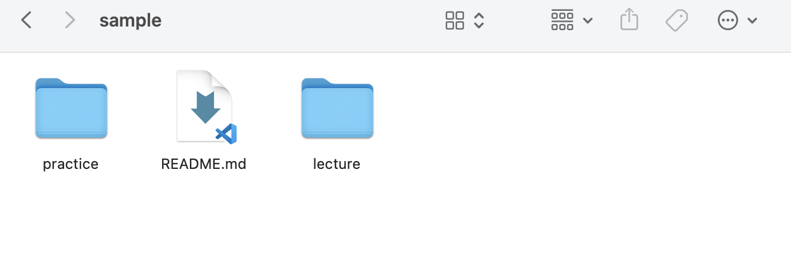
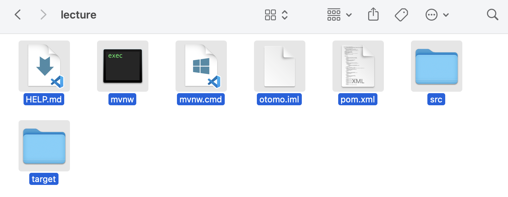

以下のコマンドを打って、配布用のレポジトリをcloneしてください。 （場所は自分のわかる場所であれば、どこでも大丈夫です。）
git clone https://github.com/KazukiOtomo/sample.git
cloneしたsampleパッケージの構成は、以下の画像のようになっています。 
このlectureパッケージの中身をGithub Classroomからcloneした自分のレポジトリ （sd22-post-XXXXXXX）に貼り付けて、一度pushしてください。

最後に、IntelliJ IDEAから、sd22-post-XXXXXXXを開きます。
フロント部分についてはLineBotを利用し、データベースも使います。 ゲームのルールについては、ローカルルールなど複数あるようなのでこちらから指定します。 記述されていないルールに関しては、各々の判断に委ねます。 任意でクラス図やビジネスフロー図などの図を使っても構いません。
- プレーヤーとディーラーは、最初にカードを2枚ずつ引く
- ディーラーはカードを１枚だけ公開しておく
- それぞれの初期手札をデータベースに記録しておく（テーブル構造の定義については指定はありません）
- 10以上のカード（J, Q, K）は、全て「10」として扱う
- 1（A）については、そのまま「1」として扱う
- ディーラーは手札が「17」以上になるまでカードを引かなければならない
- 手札の合計値が「21」に近い方の勝利
- 手札の合計値が「21」を超えると失格
- 引き分けの場合はディーラーの勝ちとする（両方失格、手札の合計値が同じの場合はディーラーの勝利）
イメージ画像（表示のメッセージについて指定はありません） 
・ハート/ダイヤのとき、数字を半分にして加算する（端数は切り捨て 例：「ハートの５」→「3」として計算する）
・Aを場合に応じて、「1」「11」として、計算するようにする。
・（配布用コード版）現状、LINE Botで動かした時に、明らかにおかしい挙動をしている。
・追加で引いたカードをDBに記録するようにする